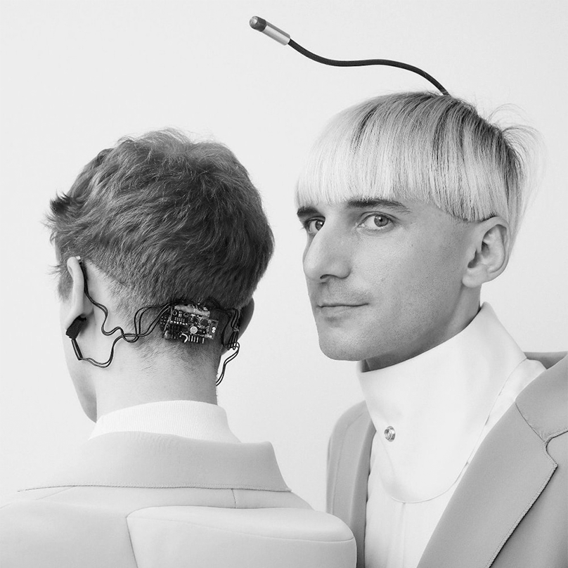
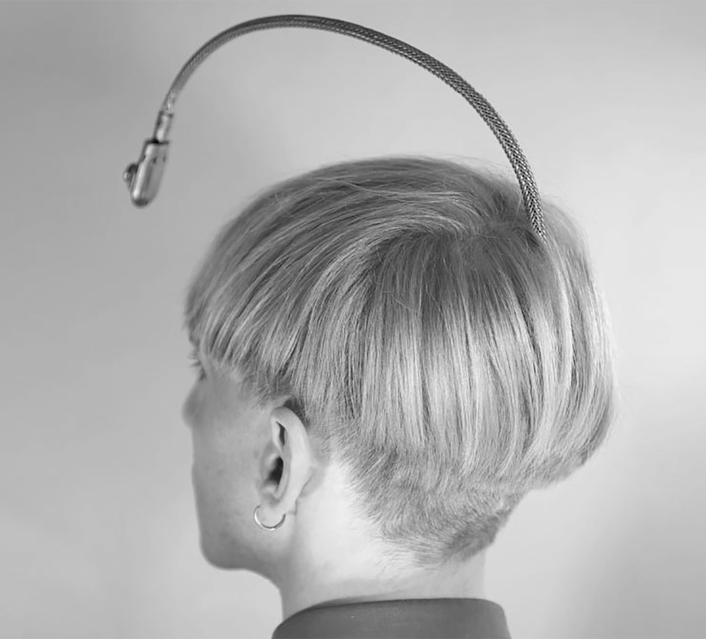
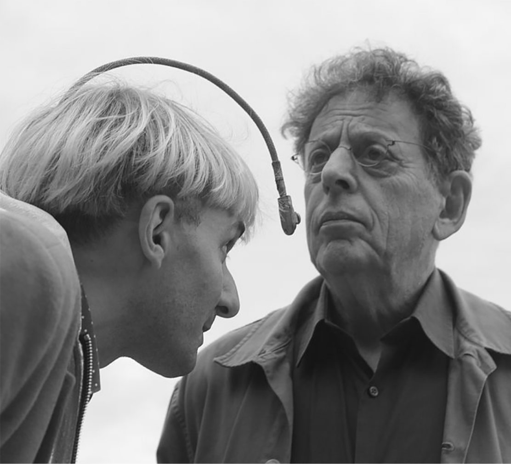

NEIL HARBISSON

Der erste Mensch auf der Welt mit einer implantierten Antenne
Neil Harbisson geboren am 27. Juli 1984, ist ein in Katalonien, Spanien, aufgewachsener, britisch geborener Avantgarde-Künstler und Cyborg-Aktivist mit Sitz in New York City. Von Geburt an sah Harbisson die Welt in schwarz-weiß-grauen
Tönen (Achromatopsie). Mit 21 Jahren installierte er sich einen Eyeborg, mit dem er Farben hören kann. Er ist Mitbegründer und Präsident der Cyborg Foundation, einer internationalen Stiftung, die Menschen helfen will, Cyborgs zu werden.
Blogeintrag: 14 .01. 2022 / Alexandra Ziegler HFIAD 21
Quelle: Wikipedia Beitrag
Wer ist Neil Harbisson
Er ist der erste Mensch auf der Welt mit einer implantierten Antenne im Schädel und außerdem der erste offiziell von einer Regierung anerkannte Cyborg. Seine Antenne benutzt hörbare Schwingungen in seinem Schädel, um ihm Informationen zu geben. Dazu gehören Messungen von elektromagnetischer Strahlung, Telefonanrufe, Musik sowie Videos oder Bilder, die in Klänge übersetzt werden. Seine Wi-Fi- Antenne erlaubt ihm auch, Signale und Daten von Satelliten zu empfangen. Seit 2004 beschreiben ihn internationale Medien als weltweit ersten Cyborg oder Cyborg-Künstler, der sich künstlerisch durch einen neuen Sinn ausdrückt, der durch die ständige Verbindung zwischen elektronischen Komponenten und seinem Gehirn entsteht. 2010 gründete er die Cyborg Foundation, eine internationale Stiftung, die nach eigenen Angaben Cyborg-Rechte verteidigt, den Cyborgismus als Kunstbewegung fördert und Menschen unterstützt, die Cyborgs werden wollen.

Biographie
Harbisson ist der Sohn eines irischen Vaters und einer spanischen Mutter. Er wuchs in Spanien auf, wo er unter anderem bei Enric Torra Klavier lernte und im Institut Alexander Satorres Kunst studierte. Dort erlaubte man ihm aufgrund seiner Achromatopsie, seine künstlerischen Arbeiten in schwarz-weiß auszuführen. Im Alter von 18 Jahren setzte er sein Klavierstudium an der Waltons’ School of Music in Dublin fort. Im folgenden Jahr ging er nach England ans Dartington College of Arts, wo er experimentelle Komposition und Klavier studierte. Dort erhielt er Unterricht von dem englischen Komponisten Frank Denyer und dem einarmigen Pianisten John Railton. Während seines Studiums in England lernte er Adam Montandon kennen, einen Kybernetik-Absolventen der Universität Plymouth. Beide arbeiteten bei der Erfindung des Eyeborg zusammen. Dieses Gerät, das Harbisson seitdem am Kopf installiert hat, ermöglichte ihm erstmals in seinem Leben, Farben durch Töne wahrzunehmen.
Die Eyeborg Erfindung
Das Eyeborg ist eine Erfindung, die Harbisson am Kopf trägt und die ihm ermöglicht, Farben zu erkennen. Es besteht aus einem Farbsensor, der neben dem Auge angebracht ist, sowie einem Kopfhörer und einem Mikrochip. Die fokussierte Farbe wird durch den Sensor wahrgenommen und zu dem am Kopf installierten Chip gesendet, dort werden die Farbfrequenzen in hörbare Frequenzen umgewandelt und ermöglichen Harbisson, die Farbe zu interpretieren. Das erste Eyeborg war ein Kooperationsprojekt von Adam Montandon und Harbisson. 2004 erhielt es den Preis für Innovation beim Submerge-Festival in Bristol (Großbritannien) sowie den europäischen Preis für Multimedia-Interface-Design „EUROPRIX Top Talent Award“ in Wien.

Cyborg-Status
Als Neil Harbisson 2004 seinen Pass erneuern wollte, wurde ihm von den britischen Behörden mitgeteilt, dass das nicht möglich sei, da er auf seinem Passfoto mit einem elektronischen Gerät zu sehen war und dies nicht erlaubt sei. Harbissons Argument, dass das elektronische Gerät als Teil seiner selbst angesehen werden sollte, wurde abgelehnt. Daraufhin suchte Harbisson die Unterstützung seines Arztes und von Mitgliedern der Universität, an der er studiert hatte. Sie alle schickten Briefe an die zugehörige Behörde und verteidigten Harbisson in dem Fall. Nach wochenlanger Korrespondenz akzeptierte die Regierung das Eyeborg als einen Teil von Harbissons Körper und ließ ihn auf dem Bild seines Reisepasses mit dem elektronischen Auge erscheinen. Somit wurde Neil Harbisson zum ersten Mal von einer Regierung als Cyborg anerkannt.
Cyborg-Stiftung
Im Jahr 2010 gründeten Neil Harbisson und Moon Ribas die Cyborg Foundation, die Menschen dazu verhelfen soll Cyborgs zu werden. Diese Stiftung war die Antwort auf die zahlreichen Anfragen, die aus aller Welt an Neil gesandt wurden. Die Hauptziele der Stiftung sind, die Sinne und die persönlichen Kapazitäten des Körpers zu erweitern und verbessern, der Einsatz der Kybernetik an kulturellen Veranstaltungen zu fördern und für die Rechte der Cyborgs zu sorgen. Im Jahr 2010 wurde die Stiftung in Mataró (Barcelona) gegründet und mit dem Creatic Tecnocampus Preis ausgezeichnet.
Harbissons sonochromatische Skala
| COLOR | HZ | NAME | HZ | NAME |
|---|---|---|---|---|
| OVER 717.591 HZ | ULTRAVIOLET | OVER 717.591 HZ | ULTRAVIOLET | |
| 607.542 HZ | VIOLET | 607.542 HZ | VIOLET | |
| 573.891 HZ | BLUE | 573.891 HZ | BLUE | |
| 551.154 HZ | CYAN | 551.154 HZ | CYAN | |
| 478.394 HZ | GREEN | 478.394 HZ | GREEN | |
| 462.023 HZ | YELLOW | 462.023 HZ | YELLOW | |
| 440.195 HZ | ORANGE | 440.195 HZ | ORANGE | |
| 363.797 HZ | RED | 363.797 HZ | RED | |
| 363.797 HZ | INFRARED | 363.797 HZ | INFRARED |